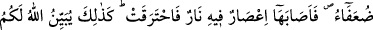

266. Sizden biriniz arzu eder mi ki, hurma ve üzüm ağaçlarıyla dolu, arasından
sular akan ve kendisi için orada her çeşit meyveden (bir miktar) bulunan bir
bahçesi olsun da, bakıma muhtaç çoluk çocuğu varken kendisine ihtiyarlık gelip
çatsın, bahçeye de içinde ateş bulunan bir kasırga isabet ederek yakıp kül etsin!
(Elbette bunu kimse arzu etmez.) İşte düşünüp anlayasınız diye Allah size âyetleri
açıklar.
Âyetin baş tarafında bulunan hemze, böyle bir şeyi kimsenin istemeyeceğini belirtmek
için getirilmiştir. Yani sizden hiçbiriniz hurma ve üzüm ağaçlarıyla dolu bir bahçesi
olup böyle bir musîbetin başına gelmesini istemez.
Burada cennet, birbirine sarmaş dolaş olmuş ağaçlar mânâsına kullanılmıştır.
Altlarından sular akmasına bu mânâ daha uygundur. Cennetle, üzerinde bolca ağaç
bulunan toprak parçası mânâsında bahçe kasdedilirse o zaman “ağaçların altından” diye
muzâf takdîrine ihtiyaç duyulur. “Her türlü meyvadan onun için bir rızık vardır.”
cümlesi, “Bizden her birimizin mâlûm bir makamı vardır.” (es-Saffat, 37/164)
âyetine benzemektedir.
“Semerât” yani meyvelerden maksad umûm değil, çokluktur. Nitekim “Her türlü
imkan (bolca) verilmiş” (en-Neml, 27/23) âyetinde de umûm değil çokluk
kastedilmiştir.
“Hurma ve üzüm ağaçlarından oluşan bir bahçe” denildikten sonra “orada her
türlü meyve var” denilmektedir. Bu nasıl olur? denilirse şöyle cevab veririz: Hurma ve
incir, meyvelerin en faydalısı olmaları hasebiyle tağlîben bu ikisi zikredilmiş ve
bahçenin bunlardan teşekkül ettiği belirtilmiştir. Halbuki bahçede diğer meyve ağaçları
da mevcûddur. Bahçe bu şekilde meyvelerle dolu iken, yaşamak için gereken şeyleri
tedârik etmekten âciz bırakan ve bahçenin gelirine daha çok muhtaç eden ihtiyarlık yaşı
gelip çatmıştır. Bu adamın, aynı zamanda, kendi hayatlarını sürdürmeye güç yetiremeyen
bakıma muhtaç küçük küçük çocukları da vardır.
“İ’sâr” yeryüzünde dönerek sütun gibi göğe yükselen şiddetli kasırga, demektir.
Adam bu halde iken, içinde ateş bulunan bir kasırga gelip; o bahçeyi yakıp kül
etmektedir. Bütün meyveler zâyi olup gittiği gibi bahçe de harâb olmuştur. Bahçe sâhibi
ise hayretler içinde kalmıştır. Bahçeyi ekerek tekrar eski durumuna getirmesi mümkün
olmadığı gibi, küçük ve bakıma muhtaç çocuklarının ona bu hususta yardım
edebilmeleri de söz konusu değildir.
Bu, yaptığı iyiliği riyâ, ezâ vb. şeylerle boşa çıkaran ve kıyâmet günü sevâba en çok
muhtaç olduğu bir anda yaptığı iyiliklerin sevâbının yok olmuş olduğunu gören kimsenin
hayret ve üzüntüsünü anlatan bir temsildir. Sırrı ile melekût alemini dolaşan, fikri ile
ceberût cennetlerine yükselen, sonra gerisin geriye asılsız ve yalan alemine dönen ve